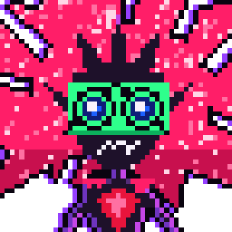

Changes apply as soon as you save.
Her brain, ears, Hermes and how many tokens she uses.
hermes setup
~/.hermes/config.yaml
mcp_servers:
~/.hermes/.env
hermes gateway
Her name, personality, size and voice.
s2.1-pro-free
What she notices on your screen and what she reminds you about.
What she may do on your computer and in your browser.
chrome://extensions
edge://extensions
browser-extension
about:debugging
manifest.json
browser-extension-firefox
about:addons
Music control and her Discord bot.
http://127.0.0.1:43821/callback
/join
/ask
/owner
/zap
/leave
/play
/music
/nowplaying
/say
capri_fan, capri_fan_alt
Hotkeys and starting with Windows.
Control+Alt+Space
Control+Shift+A
No setting matches that.